Gloam (Entre chien et loup), an immersive VR installation by Samuel Arsenault-Brassard: a vast cave,
hand-sculpted in virtual reality over four years, in which a full cycle of natural light moves through the architecture.
These are recent images of the work as it becomes a living place: an old ruined floor, rain on real stone, dust in the sunbeams,
walls that breathe, and small animals that live there.
All images are drawn in Gloam's own engine, in its light. Most are brightened for screens, as noted; the cave itself is dimmer.
Work in progress continues on the current work page.
The cave and its light
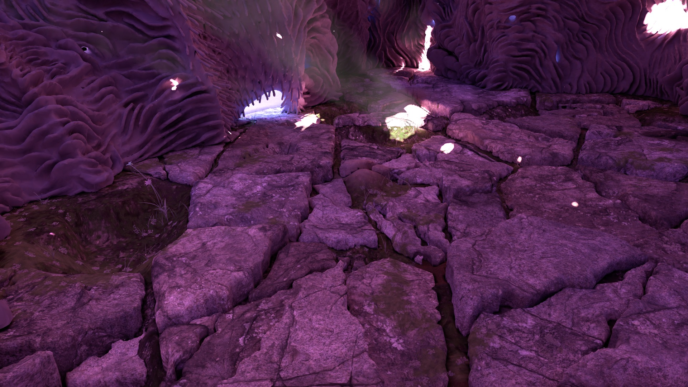
Morning light finds the old stone floor, moss growing in its cracks. (Brightened for screens.)
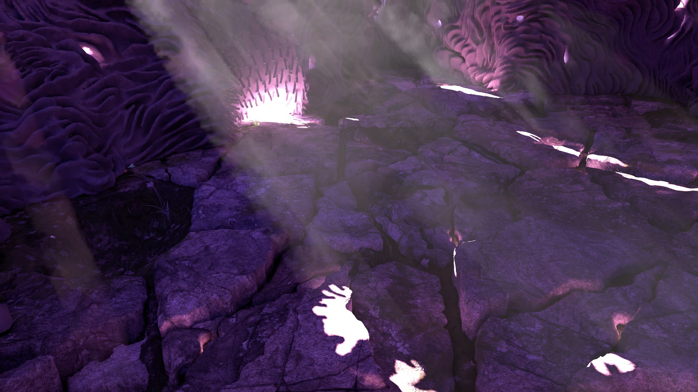
Afternoon sun falls through the openings in beams of dust and pools on the broken stones. (Brightened.)Looking up: the walls breathe, the sculpted hairs moving slowly like sea anemones (art-directed).Dust drifting through the beams of sunlight in the upper chambers.
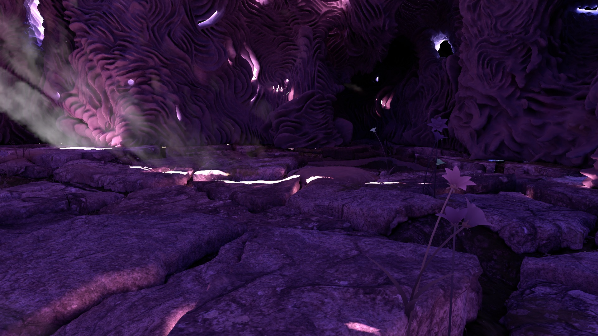
What a visitor sees lying on the floor: flowers, stone and the walls rising around them. (Brightened.)How it is made: every form is sculpted by hand in virtual reality.
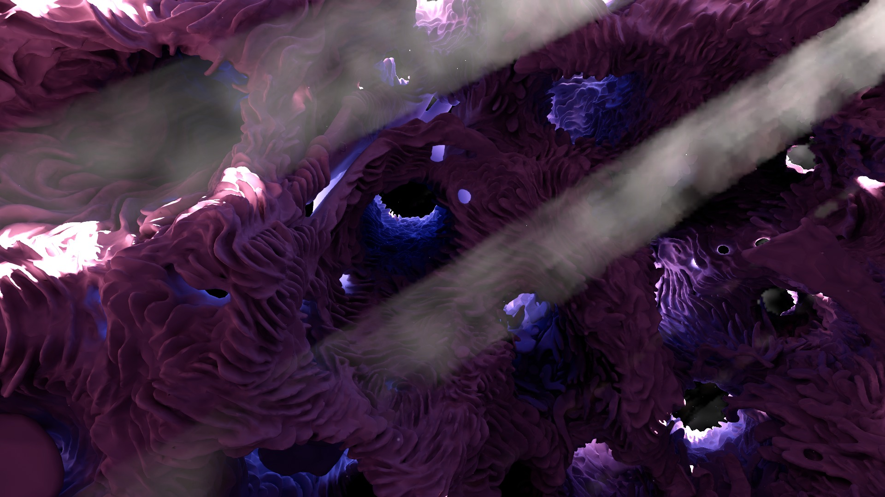
Sunbeams crossing the cave's ceiling of tunnels and openings. (Brightened.)
Rain
Rain that behaves like real water on real stone: where it falls through the openings, how it runs and pools, how the stone darkens as it gets wet.
Rain falling into the cave: each drop that strikes the grass and flowers makes them bend and spring back (offline render).
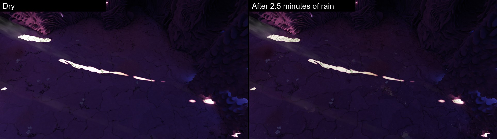
The same floor dry (left) and after two and a half minutes of rain (right): wet stone darkens as real stone does.
Creatures (first looks)
Small animals live on the floor and react to the visitor, fleeing a hand or a head that comes too close. A toad hunts the flies and gnats; snails, woodlice and springtails go about their business in the cracks. These are first looks, still being refined.
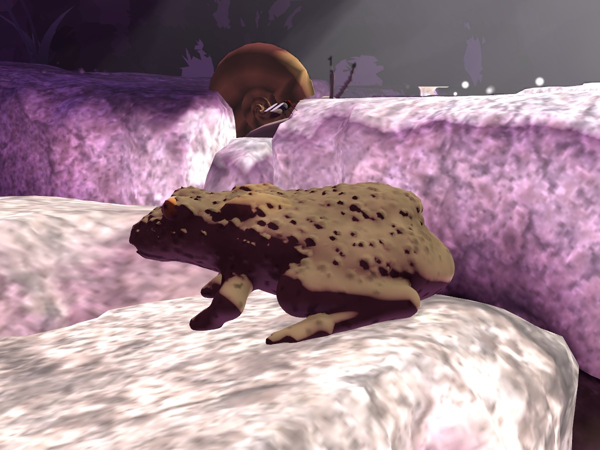
A common toad warming on a sunlit stone. Behind it a snail, and a fly resting on the snail's shell that the toad has not noticed yet. It hunts flies and gnats, and misses about four times in ten.
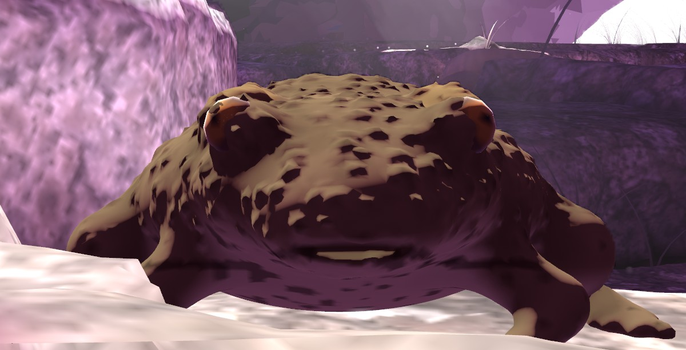
Face to face, at the toad's eye level: what a visitor lying on the floor might meet.
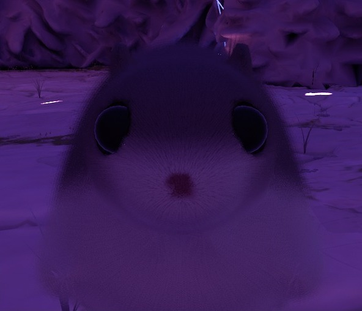
A Hokkaido flying squirrel (momonga) that turns its head to look at you; it will glide between the openings. (Brightened.)
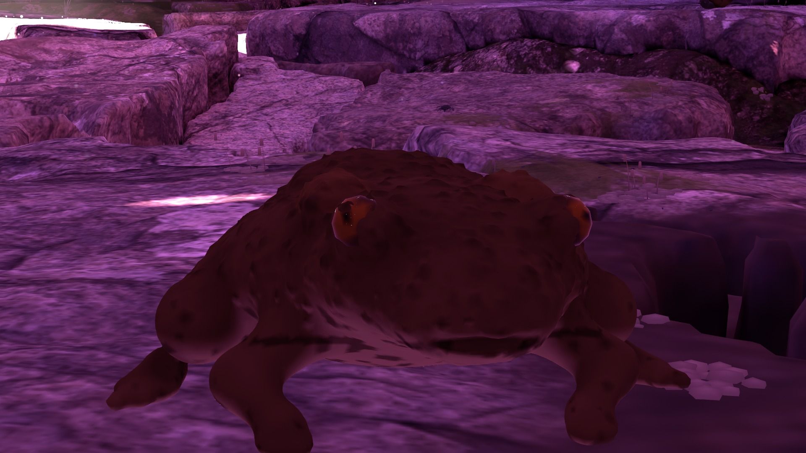
The same toad away from the sunbeams, in the cave's own dim light. (Brightened.)
The pictures are drawn by the engine with the eye adapted to the light, as a visitor's eyes would be after a moment on the floor.
Day, night and the sky
One sun, a cycle of day and night, moons, stars, comets, and a dark sun that sometimes crosses the sun and drains the cave of its light.
A whole day and night compressed into a minute, looking up into one opening: dawn, day, the dark sun, sunset, a moonlit night. (Preview.)A dark sun passes in front of the sun: the cave loses its light and colour for a moment.
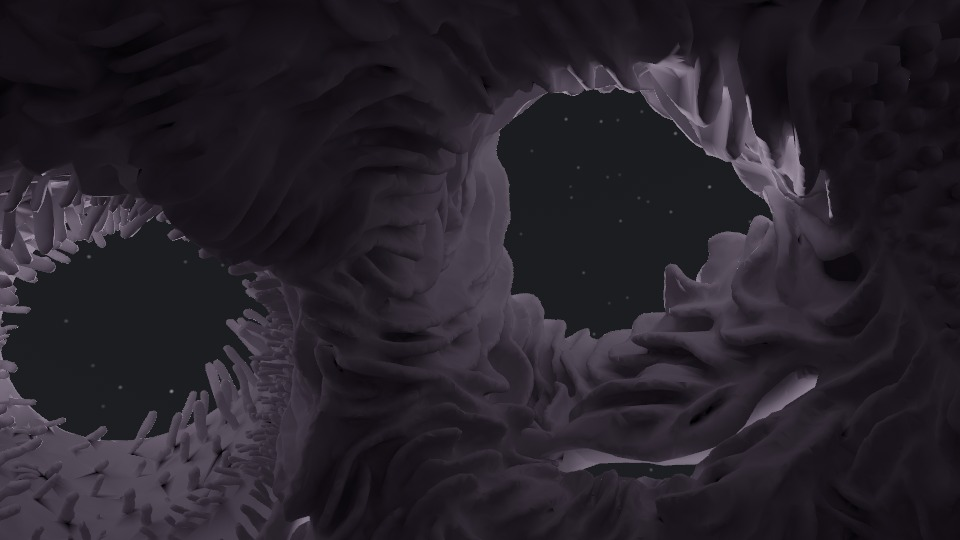
A first night: stars in an opening, the walls lit by the moon.
Coming next: the world outside
Beyond the openings lies a strange, beautiful landscape: a rift where the sun rises, ruins where it sets, ancient dragon's blood trees on a limestone plateau above a violent sea. The openings widen as a visitor comes near, and the eyes adapt to the brighter world outside. These are early shapes, before any materials or light.
A window that breathes open as the visitor comes close; the eyes adapt and the world outside appears. An early test.
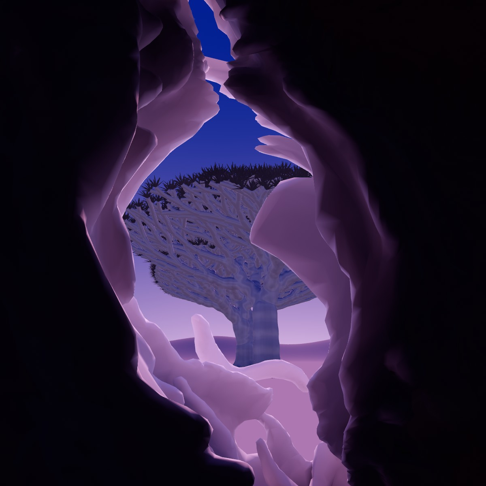
Leaning into an opening: an ancient dragon's blood tree outside. An early form study, before shadows and materials.